씬 kr_20260625에서 각 광학 클래스를 대표하는 소형 오브젝트 5개를 골라, (1) 베이크된 PBR 채널맵과 (2) 능동 편광 조명(area flash + linear polarizer)을 움직이며 찍은 편광 응답을 비교한다. 핵심 명제: "RGB에서는 <X>처럼 보이지만 편광에서는 <Y>로 드러난다" — 재질의 optical class가 편광 신호로 분리된다.
| # | class | 오브젝트 | 주입 BSDF | 편광 요약 (본 렌더) |
|---|---|---|---|---|
| 1 | metal | 수도꼭지 (Tap) | roughconductor Al | DoLP ~0.9 (전면 강한 편광) |
| 2 | glass | 유리병 (Jar) | dielectric (IOR 1.5) | DoLP 0.63→0.66 (specular만, 입사각 의존) |
| 3 | diffuse (textured) | 식품상자 (FoodBox) | pplastic + 인쇄 라벨 albedo | DoLP ~0.2 (약한 코팅 편광) |
| 4 | diffuse (flat) | 직물 램프갓 (DeskLamp) | pplastic + 직물 albedo | DoLP ~0.06→0.09 (grazing서 상승) |
| 5 | brushed-metal | TV장 (TVStand) | roughconductor Al (metallic=0이지만 optical_class=metal) | DoLP ~0.9 (금속처럼 편광) |
conductor/roughconductor(금속·거울) + dielectric(유리) + pplastic(diffuse·plastic) 로 주입한다. 아래 §요약 밑의 표 참고 — 이 셋만이 이 빌드의 폴라라이즈드 variant에서 편광 Fresnel을 낸다.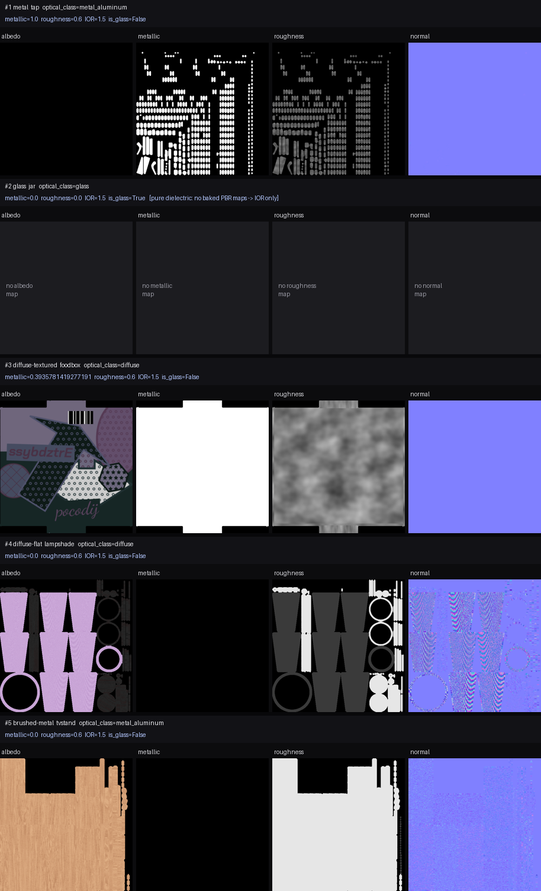
.glb의 UV로 베이크됨 — .obj export가 UV를 잃어서 렌더에는 glb의 UV를 복원해 사용.)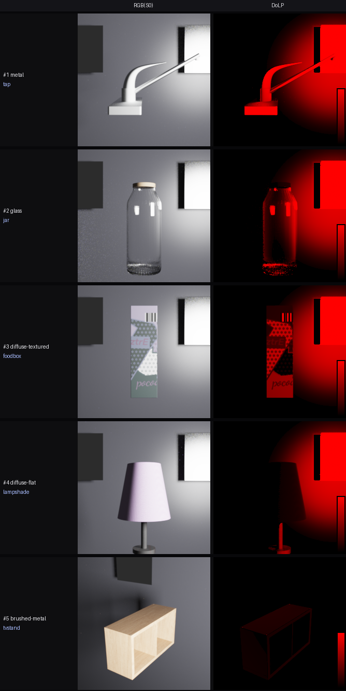
polarized_area emitter는 NEE가 살아있어 배경·투과 노이즈가 크게 준다. RGB(S0)는 각 재질의 실제 색을 담는다(foodbox 인쇄 라벨, lampshade 분홍 직물 — glb UV로 베이크 텍스처 매핑). DoLP: 금속(tap)≈0.9 강함, 유리(jar) specular만, diffuse는 pplastic 코팅으로 약하게(foodbox~0.2, lampshade~0.06). 편광 세기가 optical class를 정렬한다. tvstand는 multi-material 분리 후 이 각도에선 나무 상판이 보여 약하지만, 금속 프레임은 metallic=0인데도 conductor로 강편광.cuda_ad_spectral_polarized)| 플러그인 | DoLP(Brewster 테스트) | 편광 | 용도 |
|---|---|---|---|
dielectric (smooth) | 0.999 | ✅ | 유리(매끈) |
conductor / roughconductor | 0.95 | ✅ | 금속·거울 |
pplastic | 0.87 | ✅ | diffuse·도장·직물·코팅 |
roughdielectric | 0.000 | ❌ | (편광 미지원 — 사용 금지) |
thindielectric | 0.000 | ❌ | 미지원 |
plastic / roughplastic | 0.000 | ❌ | 미지원 → pplastic로 대체 |
roughdielectric과 plastic/roughplastic은 이 빌드에서 편광 Fresnel을 만들지 못한다(DoLP≡0). 유리는 dielectric(smooth), 도장/plastic/diffuse는 pplastic으로 주입해야 편광이 나온다. render_material_closeups.py 등 dielectric/plastic 주입 경로 점검 필요.능동 편광 조명 = 커스텀 polarized_area emitter(아래 §6). 배경에는 편광광이 실제로 뿌려지고 변하는지 보이는 witness 2개 — 좌: bare mirror(flash 편광을 반사 → DoLP/AoLP에 나타남), 우: mirror+고정 polarizer analyzer(소광 witness: 조명 편광각이 돌면 밝기가 밝→어둠→밝). 두 모션:
6패널 = RGB(S0) · DoLP · AoLP · s1/s0 · s2/s0 · s3/s0. DoLP·AoLP는 편광 마스크(S0>0.04 & DoLP>0.05)로 편광 영역만; s1/s2/s3는 마스크 없이 전영역 BwR(unpolarized=흰색, 부호장 그대로). s3는 원편광이라 선형광학만 있는 이 씬에선 ≈0(흰색). soft Reinhard 톤매핑으로 하이라이트가 안 날아가고 EXR(S0)도 동시 출력. 각 편광 패널 우하단 컬러바. 배경 벽은 glossy(pplastic)라 편광 반사가 보인다(analyzer/벽 witness 강화). 광원 polarized_area, spp8000(유리 12000).
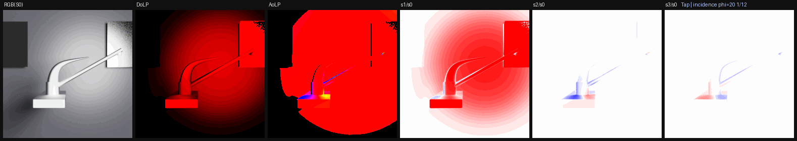
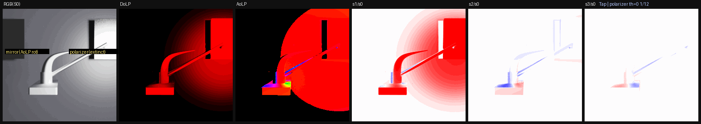
dielectric)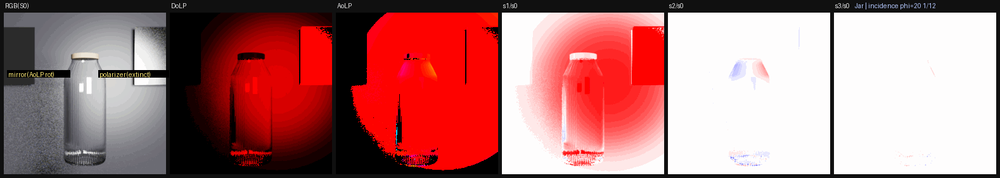
dielectric)과 나무 뚜껑(pplastic)을 multi-material로 분리. 투명 유리는 specular 하이라이트에서만 편광, grazing으로 갈수록 DoLP↑(Brewster). 투과 특성상 남는 grain은 spp16000 + max_depth 제한 + firefly 클램프로 완화.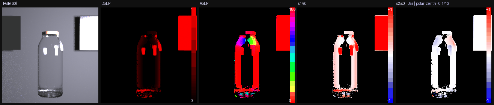
pplastic + 라벨 텍스처)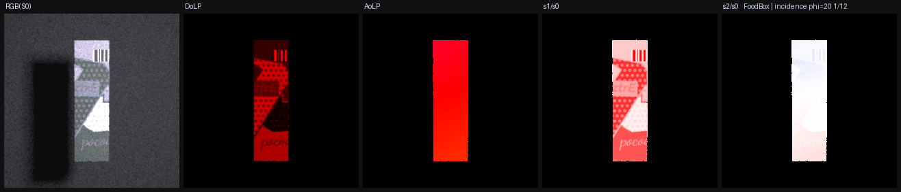
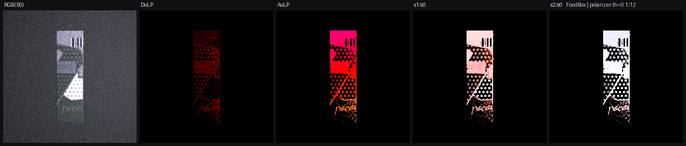
pplastic + 직물 텍스처)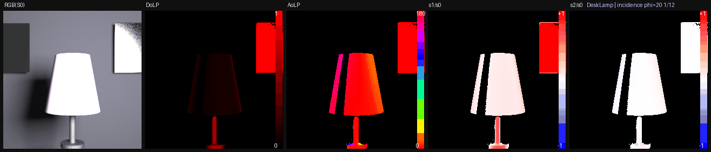
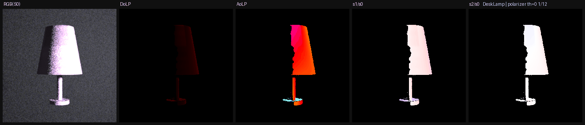
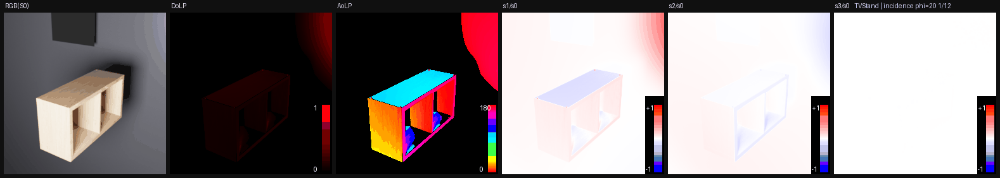
roughconductor)과 나무 상판(pplastic+텍스처)을 각 geometry로 나눠 주입. 이 각도에선 나무 상판이 보여 DoLP가 약하지만, 금속 프레임은 metallic=0.0인데도 conductor로 렌더돼 강편광한다(값과 렌더의 불일치 = Q3).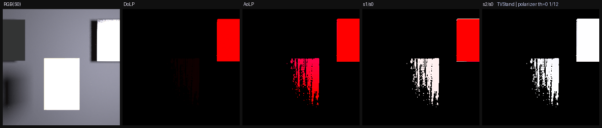
.obj 대신 .glb를 소비해야이번 작업에서 드러난 구조적 이슈: OpticalNav 렌더 경로는 .obj 메시를 소비하는데(import_infinigen_scene.py:547 source_ref=<import>/meshes/<id>.obj), Infinigen import의 .obj는 UV(vt)를 잃어버린다(대부분 vt=0). 그래서 베이크된 albedo/텍스처를 렌더에서 매핑할 수 없고 per-material 분리도 안 된다.
반면 같은 오브젝트의 .glb에는 UV와 material별 geometry가 온전히 살아있다(본 작업은 trimesh로 glb를 로드해 per-material UV 메시로 복원 → 베이크 텍스처 매핑 + per-material BSDF 성공).
중요한 건 이미 그 machinery가 코드베이스에 있다는 점이다 — glb_texture_adapter.py는 GLB를 per-material OBJ 파트(has_uv 추적) + 추출 텍스처로 브리지한다. 다만 이건 현재 DTC 카탈로그 전용(vendor_datasets/dtc_objects/*/3d-asset.glb)이고, Infinigen import는 이 경로를 타지 않는다.
| 자산 | source_ref | UV | 텍스처 | per-material |
|---|---|---|---|---|
| DTC 카탈로그 | .glb → glb_texture_adapter | ✅ | ✅ 추출 | ✅ 분리 |
| Infinigen import | .obj (UV 없음) | ❌ | ❌ 매핑 불가 | ❌ |
권장: Infinigen import도 .glb를 source로 참조하고 glb_texture_adapter(또는 그 확장)를 태워서 UV·베이크 텍스처·per-material 분리를 렌더 경로에서 사용하도록 개선. blender export 단계에서 UV 보존 .obj를 쓰는 방법도 있으나, glb 경로 재사용이 기존 계약(OBJ + extracted_material)과 호환되어 더 간단하다.
polarized_area emitter 플러그인문제: "area emitter + 앞의 polarizer 판" 조합은 편광판이 NEE(직접광 shadow ray)를 막아, 빛이 BSDF 샘플링 경로로만 들어와 고분산 → firefly. 특히 투명 유리는 심했다.
해결: 이미 편광된 빛을 직접 방출하는 커스텀 emitter를 작성(modules/mitsuba3/src/emitters/polarized_area.cpp). area.cpp를 복제하고 eval/sample_direction/eval_direction의 depolarizer를 theta각 linear-polarizer Mueller(방출방향 si.wi 기준, polarizer BSDF의 frame 레시피 재사용)로 교체. 파라미터 radiance·theta(deg). 별도 편광판 surface가 없어 NEE가 살아있고, 씬도 단순해진다.
효과: 편광은 동일(DoLP 0.95, area+polarizer와 일치)하면서, 곡면 유리+diffuse 배경 씬에서 firefly/grain이 급감. (flat 평판 테스트에선 차이가 작지만 — 그 경우 노이즈가 BSDF 분산 지배 — 실제 오브젝트 씬에서 큰 개선.) 빌드: ninja polarized_area → plugins/polarized_area.so.
남은 유리 grain(투명 dielectric의 굴절 caustic)은 NEE로도 근본 제거되지 않아 spp로 완화. 필요 시 OptiX denoiser가 다음 후보.
conductor(금속) + dielectric(유리) + pplastic(diffuse/plastic). roughdielectric·roughplastic은 편광 미지원(DoLP=0)이라 금지..glb의 UV를 복원해 베이크 albedo를 매핑 → S0가 실제 재질 색(라벨·직물색)을 담는다. .obj export는 UV를 잃으므로 glb를 써야 한다.visual.material.name=manifest 재질명) per-geometry BSDF 주입 가능 → jar(유리+나무), tvstand(금속+나무)를 정확히 렌더.